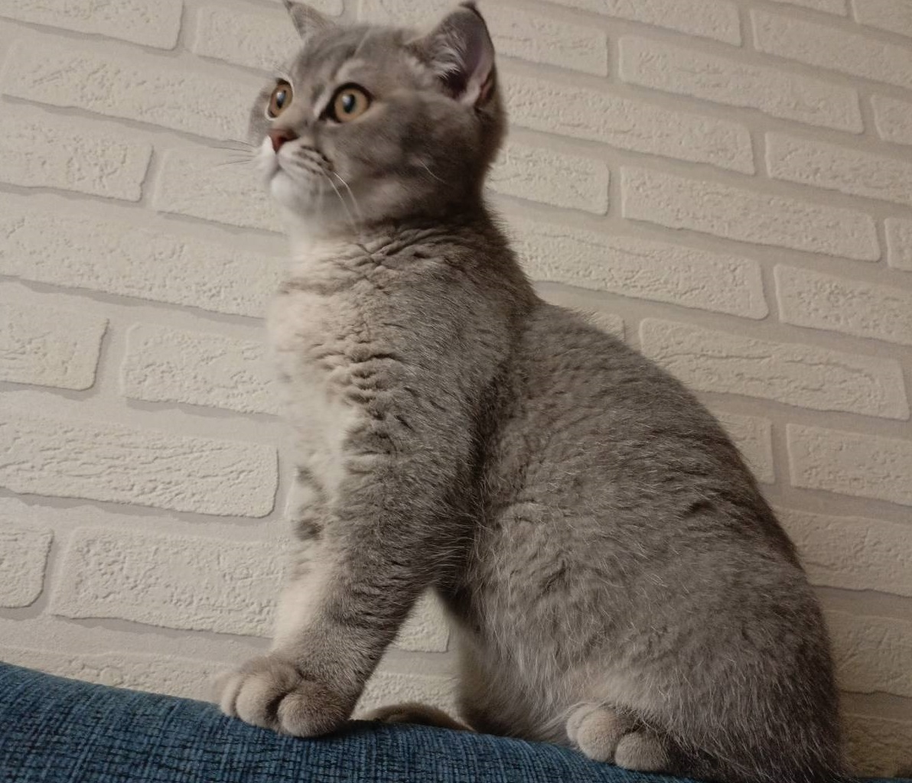
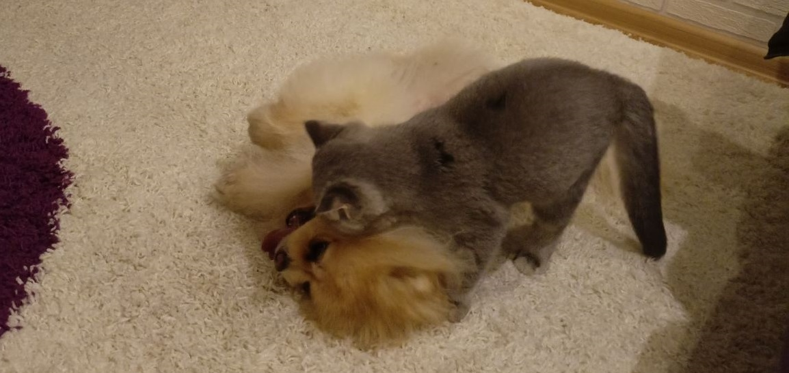
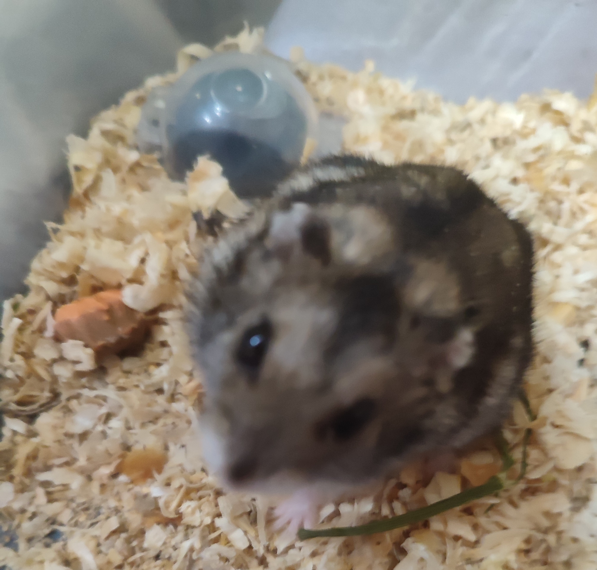
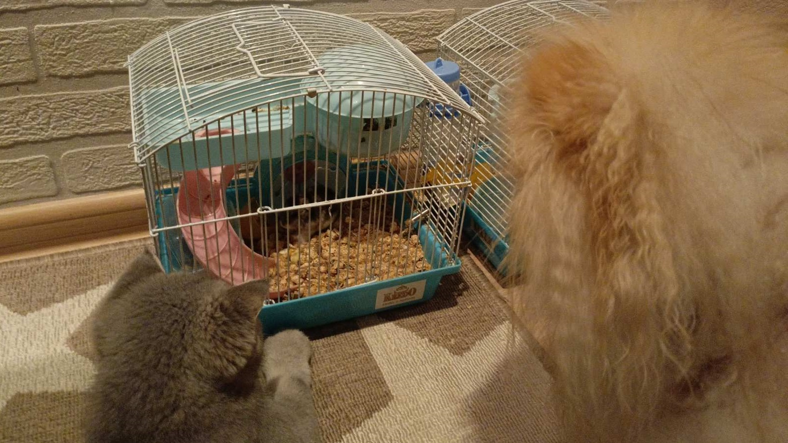

обзор кота по кличке Миста
фото

распорядок дня
- 00:00 - день начинается и зарядка
- 00:30 - снести зановеску
- 01:00 - надо отдохнуть
- 01:30 - играть с другом
- 02:00 - выкинули с спальни пора на кухню
- 02:30 - снёс стул
- 03:00 - пора спать
- 13:30 - носится по хате
- 14:00 - залес в диван - вылез - чуть не снёс хомяка
- 14:30 - пора есть
- 15:00 - собака ест и я тоже ем его еду
- 15:30 - хозяин свалил - подрал диван и ковер
- 16:00 залес в диван и пора спать
- 23:45 - пора вставать
любимые занятия
- снести зановеску
- сгрысть кабель
- доколупаца до собаки
- доколупаца до хомяка
- спать
- есть
- охотится на хозяина
друзья
| ричи |
собака

|
| вини |
хомяк

|
у мисты нет соц сетей но вот
ссылка